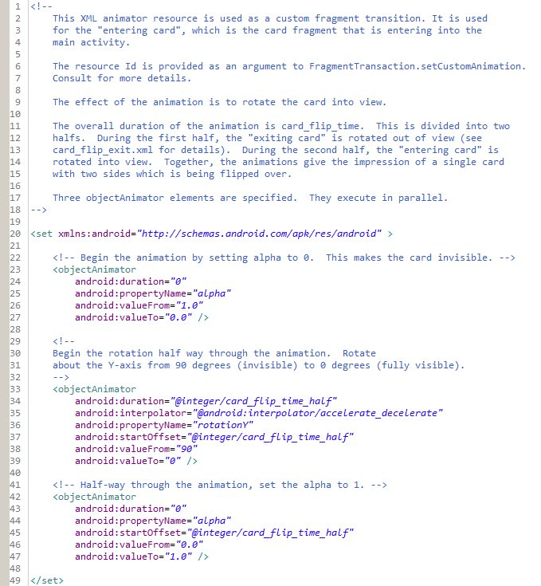
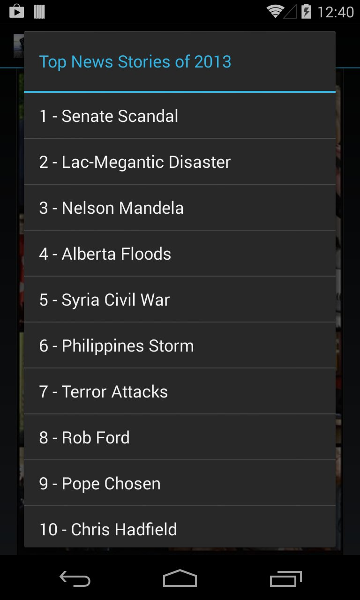

- java.lang.Object
-
- Activity
-
- ca.yorku.eecs.mack.democardanimation.DemoCardAnimationActivity
-
public class DemoCardAnimationActivity extends ActivityDemo_CardAnimation - demo of "card" animations. Also demonstrates use of Android'sShadersubclasses to create gradient shading.Related information:
API Guides:
This demo implements ten "cards" representing top news stories of 2018. The news source is- Property Animation (and subsection Declaring Animations in XML)
- Fragments
- Animation Resources
API References:
Android Training:
- Adding Animations (and the subsection Displaying Card Flip Animations)
- Making the View Interactive
Android Developers Blog:
ctvnews.ca. Each card has two sides. The front is an image collage depicting a story. The back presents a text summary of the story. Upon launch, the application presents the front of the first card depicting the #1 new story of the year (below left). If the user taps the cards, the card flips over to show a summary of the story (below right). The front-to-back transition is animated. Obviously, the animation is not apparent in the screen snaps.All card transitions in this demo are initiated using finger gestures. The animations are implemented using Android's Property Animation framework which was introduced in Honeycomb (Android 3.0). The animations are demo'd using gestures:
Finger
GestureTransition Animation From To Tap Card font (or back) Card back (or front) Flip Swipe left Current card Next card Slide left Swipe right Current card Previous card Slide right Long-press Current card New card (selected from menu) Fade-in/scale One of our earlier demo programs, Demo_GridView, also uses Android's Property Animation framework. There is a difference, however. In Demo_GridView, the animations are implemented in code. Here, the animations are declared in XML resource files. There are two advantages in declaring animations in XML resource files: (i) easy reuse of animations in multiple activities, and (ii) easy editing of the animation sequence.
Declaring an animation in an XML resource file is one thing. Getting the animation to actually run is a bit tricky, however. Let's continue with a high-level description of the demo's organization and how the animations are run.
The layout for the main activity is defined in
main.xmlwhich includes a singleFrameLayoutelement:<FrameLayout xmlns:android="http://schemas.android.com/apk/res/android" android:id="@+id/container" android:layout_width="match_parent" android:layout_height="match_parent" />The
FrameLayouthas the Idcontainer(see above). It is a "container" into whichViewinstances are added and removed. At any point in time, theViewinstance in theFrameLayoutis either anImageView(the image collage, card front) or aLinearLayout(the summary text, card back). These views are the layouts for two fragments, which are added to or removed from the main activity as the UI processes finger gestures.A fragment is like a "sub-activity" which can be added to or removed from a main activity. Android fragments are relatively easy to work with. (Consult the API Guides or API References for full details; links above). Here, we define two fragment classes. Each is an inner-class that
extends Fragment. One is for a card front (CardFrontFragment), the other is for a card back (CardBackFragment). As an example,CardFrontFragmentis defined as follows:public static class CardFrontFragment extends Fragment { CardFrontImageView frontView; // subclass of ImageView public CardFrontFragment() { } @Override public View onCreateView(LayoutInflater inflater, ViewGroup container, Bundle savedInstanceState) { frontView = (CardFrontImageView)inflater.inflate(R.layout.fragment_card_front, container, false); frontView.setImageResource(imageId); frontView.setTitleText(title); return frontView; } }The layout forCardFrontFragmentis specified infragment_card_front.xml, which simply holds anImageViewinto which an image is put. The layout itself is put into the main activity'sFrameLayout, which bears the Idcontainer(see above).The
So, the main task in this demo is to add new fragments to the main activity while removing old fragments. We now describe how fragments representing cards are added and removed.ImageViewfor the card front is actually an instance ofCardFrontImageView, which extendsImageView. A custom class is used since a title is superimposed on the image (details below).All card transitions are initiated using touch gestures, which are handled by implementing
onSingleTapUp,onLongPress, andonFling. These are listener methods defined inGestureDetector.OnGestureListener(seeDemoScalefor further discussion). As an example, the card "flip" animation is initiated inonSingleTapUp. The method includes a single call toflipCard. Here's the code forflipCard:private void flipCard() { showingBack = !showingBack; // toggle showing back/front if (showingBack) { getFragmentManager().beginTransaction() .setCustomAnimations(R.animator.card_flip_enter, R.animator.card_flip_exit) .replace(R.id.container, new CardBackFragment()) .commit(); } else { getFragmentManager().beginTransaction() .setCustomAnimations(R.animator.card_flip_enter, R.animator.card_flip_exit) .replace(R.id.container, new CardFrontFragment()) .commit(); } }Flipping cards is a matter of swapping fragments. This is done by initiating a transaction (beginTransaction) on the main activity'sFragmentManager. Swapping is done via thereplacemethod, which removes the current fragment and replaces it with a new fragment.The code to swap fragments includes a series of chained method calls on the main activity's
FragmentManager. As well asbeginTransactionandreplace(just noted), there is a call tosetCustomAnimations(see above). This method takes two arguments. Both arguments are Ids for XML animation resources. The first argument is the animation to run for the entering fragment. The second argument is the animation to run for the exiting fragment. Bear in mind that the animations are run on the view of the fragments, not on the fragments per se. The animation resources hold the XML elements that specify the animation. The following shows the contents ofres/animator/card_flip_enter.xml– the animation for bringing a card into view: (This appears below as an image, since the XML is well-commented. Please review in detail.) And that's about it.
As well as the "flip" animation, this demo includes a "slide" animation and a "fade-in/scale" animation. The slide animation occurs in response to a swipe left or swipe right gesture (in
onFling). The effect is to slide the current card out of view and the next or previous card into view. The process is much the same as for the flip animation. Of course, different animation resource files are specified in thesetCustomAnimationsmethod.The fade-in/scale animation is used when a new card is selected from a popup menu. The menu appears in response to a long-press gesture (in
onLongPress): Another feature demo'd is the use of Android's
Shaderclass (actually, its subclasses) to create a background for the card title. The background has gradient shading around the edges, creating a fading-out feathered effect. This is seen in the 1st image above. Creating the gradient is delegated to a method calledgetGradientEdgedRectanglewhich is called from theonSizeChangedmethod in theCardFrontImageViewclass:background = getGradientSquare(backgroundWidth, backgroundHeight, gradientSize, 0xddff0000);ThegetGradientEdgedRectanglemethod returns a bitmap. In theonDrawmethod, the bitmap is drawn onto the canvas (after which the text for the title is drawn):@Override public void onDraw(Canvas canvas) { // draw image super.onDraw(canvas); // draw the background for the title canvas.drawBitmap(background, backgroundLeft, backgroundTop, null); // draw the text for the title canvas.drawText(titleText, xText, yText + yOffset, textPaint); }The gradient bitmap is built-up as a series of seven regions which are drawn into the bitmap to create the desired effect for the background and the edges:
The central, left, and right regions are painted using a
LinearGradientshader while the corner regions are painted using aRadialGradientshader. Consult the source code and comments for further details.
{kind=link}
{kind=link}
{kind=link}
{kind=link}
-
-
Nested Class Summary
Nested Classes Modifier and Type Class and Description static classDemoCardAnimationActivity.CardBackFragmentstatic classDemoCardAnimationActivity.CardFrontFragment
-
Constructor Summary
Constructors Constructor and Description DemoCardAnimationActivity()
-
Method Summary
All Methods Instance Methods Concrete Methods Modifier and Type Method and Description protected voidonCreate(Bundle savedInstanceState)voidonRestoreInstanceState(Bundle savedInstanceState)voidonSaveInstanceState(Bundle savedInstanceState)booleanonTouch(View v, MotionEvent me)
-